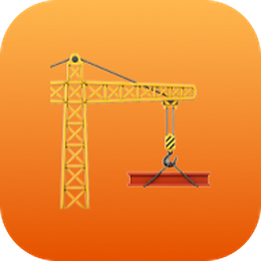
ObrasProDa primeira obra cadastrada até o pacote do contador: o que cada tela faz, a ordem de configurar e as dúvidas mais comuns.
No navegador do celular ou do computador: obraspro.luqsys.com.br
No campo Usuário vai o seu e-mail. Ainda não tem conta? Toque em Testar 3 dias grátis.
Já dentro, toque em 🔐 Ativar Face ID no topo. Da próxima vez, use Entrar com Face ID. A senha continua valendo.
Chame o suporte no WhatsApp que a gente libera uma nova. Pra trocar, o Admin da conta edita o usuário em Configurações → Usuários e Permissões.
Abra obraspro.luqsys.com.br/instalar no celular e siga o passo a passo do iPhone ou do Android. Ficam três ícones: ObrasPro, Resumo e Conferir.
No primeiro acesso abre a tela de boas-vindas, com 6 passos. Cada um tem um botão que leva pra tela certa:
Botão + Nova Obra, ao lado da escolha da obra.
Em ⚙️ Configurações.
Foto, PDF ou XML da NF-e.
Depois toque em Ir pro sistema →. Pra rever, use a Ajuda.
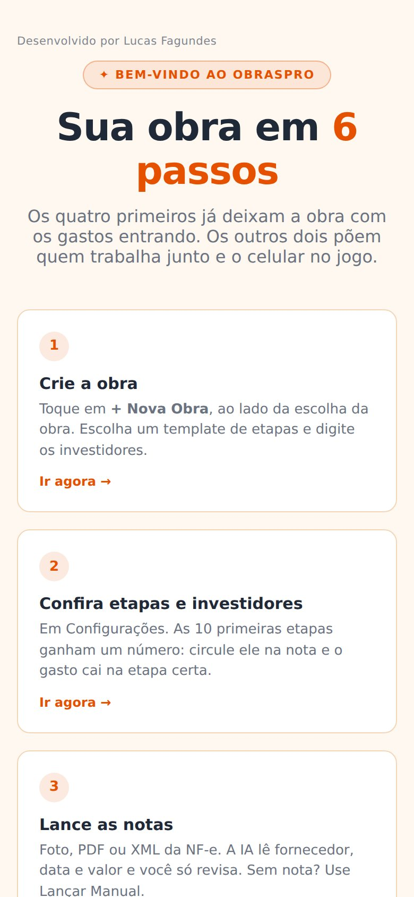
Em + Nova Obra: nome, tipo (Construção ou Reforma), cliente, endereço, data de início e a taxa de correção mensal dos aportes (0,01 = 1%). Escolha um template de etapas (casa, apartamento, reforma completa, cozinha/banheiro, reforma simples ou personalizado) e digite os investidores separados por vírgula. Tudo dá pra mudar depois.
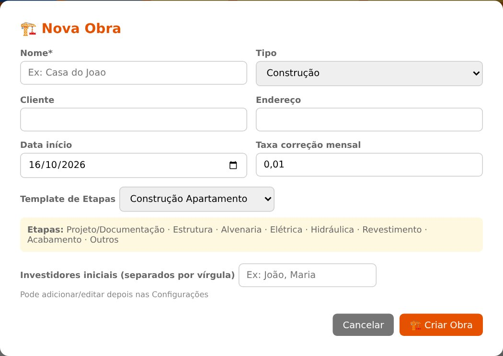
A obra escolhida no topo (📍 Obra) vale pra todas as abas.
Na mesma aba: 🧾 Importar XML de NF-e (dados direto do arquivo, sem leitura de imagem) e 📄 Importar Relatório (PDF com várias notas: um gasto por nota, canceladas puladas).
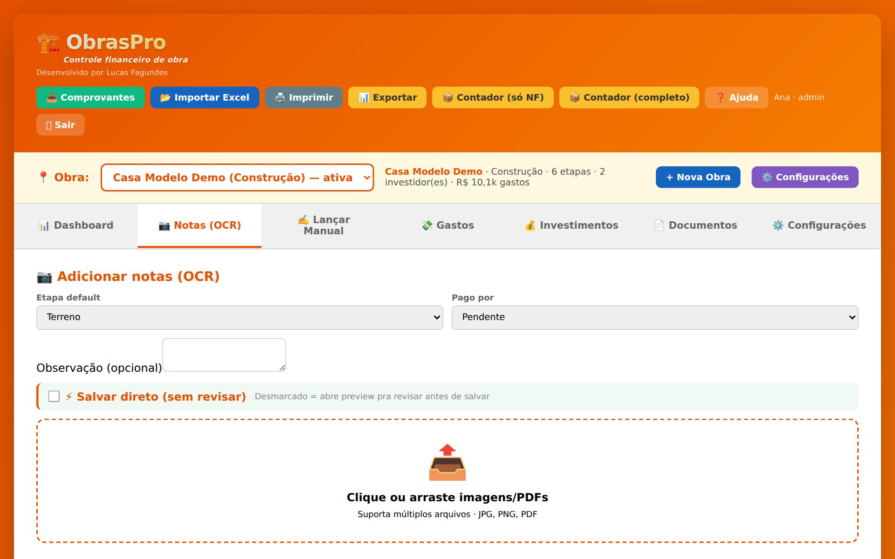
Pra gasto sem nota: data, valor, fornecedor, etapa, categoria, forma de pagamento e quem pagou. Vencimento serve pra conta a pagar.
Em 💸 Gastos ficam todos os lançamentos da obra, com filtro por texto, etapa, categoria, quem pagou, status, tipo de documento e período.
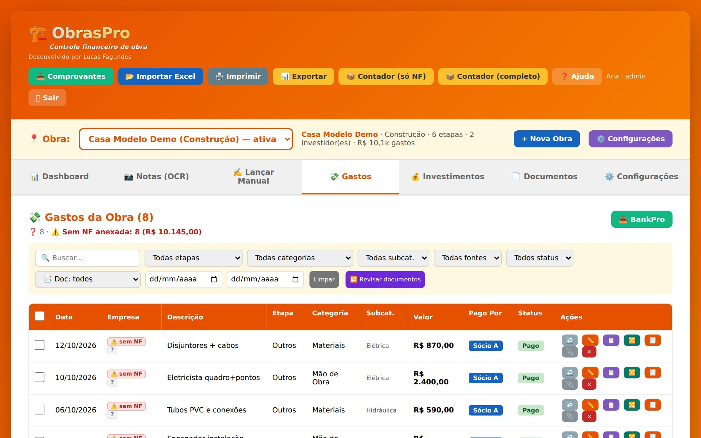
| Em cada linha | Marcar pago, ✏️ editar, 📋 duplicar, 🔀 copiar pra outra obra, 🧾 recibo em PDF, 📎 anexos e × excluir. |
| Em lote | Marque várias linhas e mude de uma vez: pago, etapa, categoria, quem pagou, ou exclua. |
| ⚠️ sem NF | Gasto sem nota fiscal anexada. Clique no selo pra anexar nota, recibo, comprovante ou boleto. Um gasto aceita vários arquivos. |
| 🔁 Revisar documentos | Relê os anexos da obra e corrige o tipo de cada um (nota, comprovante, recibo). |
| 📂 Importar Excel | No topo: traz a planilha que você já usava. Você diz qual coluna é data, descrição e valor. |
Total da obra, pago, a pagar, o saldo de cada sócio, o gasto por etapa, as subcategorias que mais gastaram e a evolução mês a mês.
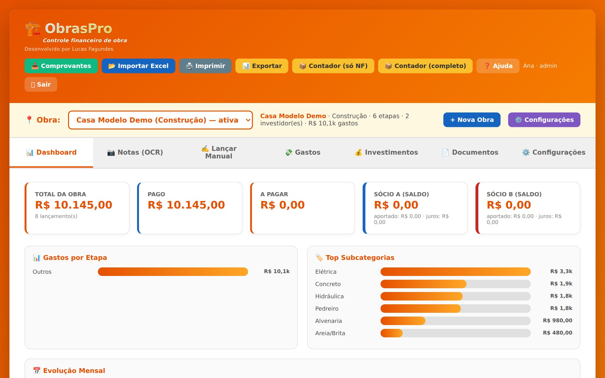
Registre o dinheiro que cada investidor colocou. Quando um gasto é lançado com Pago por um investidor, o aporte entra sozinho.
A correção conta dia a dia desde cada aporte, pela taxa da obra (padrão 1% ao mês). Cada investidor pode ter taxa própria em Configurações → Investidores; vazio usa a da obra. Serve pro acerto no fim da obra.
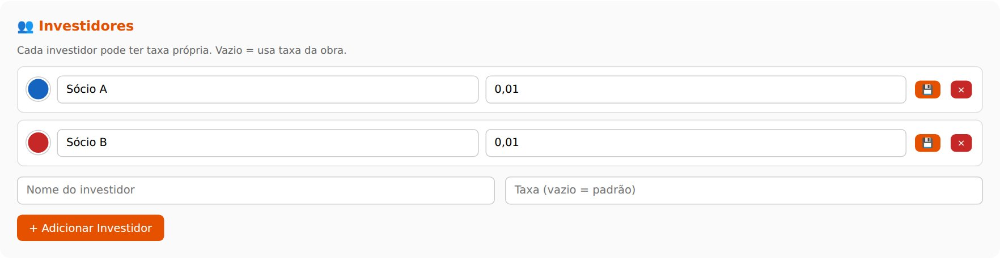
| Dados Gerais | Nome, tipo, cliente, endereço, data, taxa e status: Ativa, Pausada, Concluída ou Arquivada. |
| Etapas da Obra | Mude, adicione e tire etapas. As 10 primeiras ganham o número que vai circulado na nota. |
| CNO / Fiscal | Número do CNO, CPF ou CNPJ do proprietário e regime. O 📊 Relatório CNO monta o relatório pra apuração do INSS da obra. |
| Categorias | No fim da tela. Já vem com Material de Construção, Mão de Obra, Projeto/Taxas, Equipamentos e Outros. Valem pra todas as obras. |
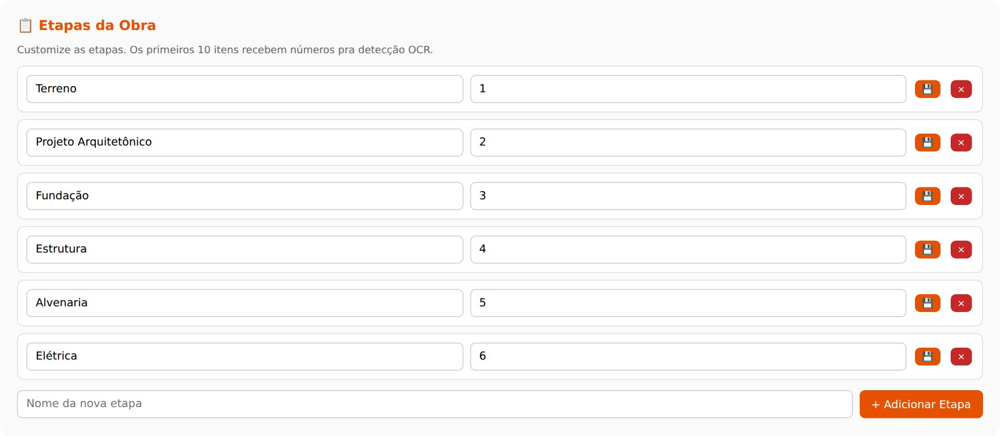
Em Contabilidade mensal, coloque o e-mail do contador. Todo dia 1º, às 8h, ele recebe o mês anterior: uma planilha por obra e as notas (ou todos os anexos). Dá pra escolher as obras, desligar e mandar um mês fora de hora em Enviar um mês agora.
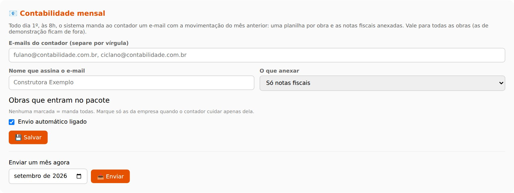
Pra mandar na hora: no topo, 📦 Contador (só NF) gera um ZIP com o Excel e as notas; 📦 Contador (completo), com todos os anexos. 📊 Exportar baixa só a planilha. Os três respeitam os filtros da aba Gastos.
Contratos, orçamentos, projetos e arquivos de quem trabalha na obra. Ao subir, a IA tenta preencher título, tipo, nome, valor e data.
Só o Admin vê. Em + Novo Usuário: nome, e-mail, senha e papel. Dá pra ajustar cada permissão (ver, editar, excluir) por parte do sistema.
| Viewer | Só vê. |
| Editor | Lança e edita os dados das obras. |
| Admin | Tudo, inclusive usuários. |
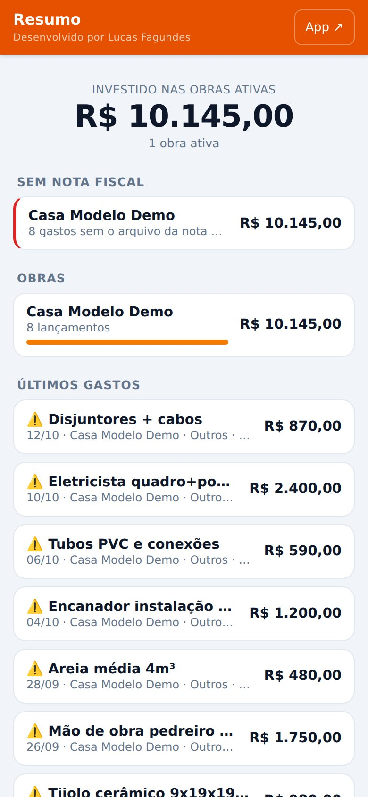
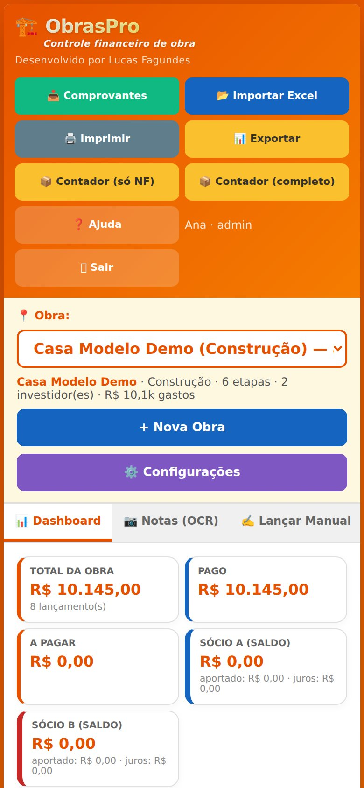